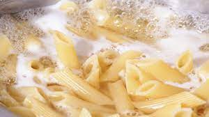
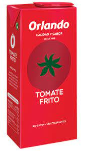
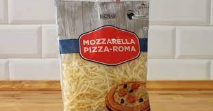
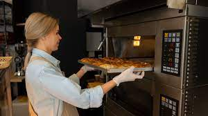

el retrasado del ruso (radupavelghervan) no lo sabe azer
Con una olla con 3/4de agua, la pones al fuego y espera a que empiece a hervir el agua.
En cuanto este el agua hirviendo, añade la pasta
Cuando la pasta ya se haya hecho, procediremos a hacer la salsa.
Pasos para hacer la salsa:
En cuanto acabemos de hacer la salsa, la mezclaremos con la pasta y la añadiremos en un recipiente.
Una vez en el recipiente, echamos queso rallado del marcadona.
A continuación, ponemos el recipiente con todo listo en el horno durante 10 min. para que se funda el queso.
